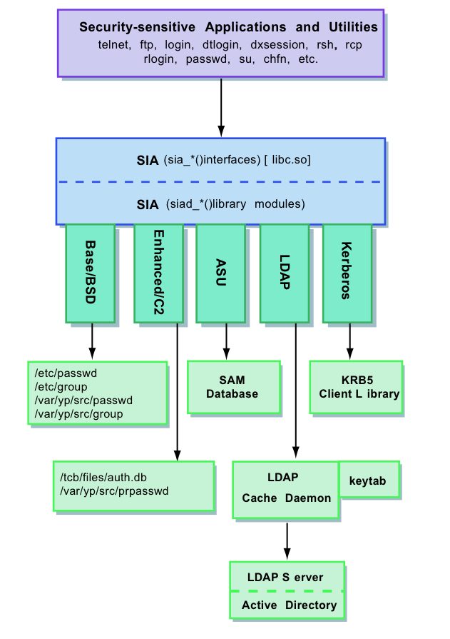

Les mécanismes PAM et NSS sont intégrés dans la plupart des systèmes d’exploitation UNIX modernes. Mais contrairement à Solaris et Linux, l’environnement Tru64 ne supporte pas ces mécanismes. En fait, Tru64 utilise une architecture plus ancienne et qui lui est propre : l’architecture SIA (Security Integration Architecture).
A l’identique de PAM, l’architecture SIA permet de gérer plusieurs mécanismes d’authentification dont LDAP et Kerberos. De même, cette architecture permet la gestion des utilisateurs et le changement des mots de passe au moyen de la commande UNIX passwd. Par contre, l’architecture SIA offre moins de souplesse que PAM. En effet, il n’est pas possible de réaliser la configuration d’un service particulier (telnet ou ftp par exemple). Une seule configuration est utilisée pour tous les services. De ce fait, si l’authentification LDAP est activée sur le système, tous les services sont configurés pour utiliser LDAP comme mécanisme d’authentification.
Bien que l’architecture SIA soit facile à mettre en oeuvre et bien intégrée au système Tru64, elle ne permet que la gestion des mécanismes d’authentification. Contrairement au mécanisme NSS, elle n’est utilisée que pour la gestion de la base de données des comptes utilisateurs (passwd) et des groupes (group).
L’architecture SIA est constituée d’une interface en deux couches. Une couche indépendante pour les applications ou commandes (ftp, telnet. . .) et une autre dépendante pour les fournisseurs de sécurité système. Les applications font appel à la couche indépendante qui fait à son tour appel aux différents modules de la couche système. En faite, l’interface dépendante du mécanisme d’authentification est une bibliothèque partagée offrant un des quatre mécanismes de sécurité suivant :
/usr/shlib/libsialdap.so)Chaque mécanisme de sécurité repris plus haut, offre au moins une des fonctionnalités suivantes :
La figure 3.4 reprend les différentes couches de l’architecture SIA et les mécanismes d’authentification supportés. Dans le cas d’une authentification LDAP, une application désirant authentifier un utilisateur, va faire appel aux fonctions de la couche SIA. Ensuite, cette dernière utilise un module LDAP pour accéder à l’annuaire via le démon ldapcd chargé des communications LDAP. Si les données concernant l’utilisateur sont retrouvées et si le mot de passe est correct, alors l’utilisateur est authentifié.

Fig. 3.4 – Security Integration Architecture
Chaque entrée du fichier /etc/sia/matrix.conf détermine pour chaque fonction de l’architecture SIA, le ou les mécanismes d’authentification à utiliser et l’ordre dans lequel ils seront appelés. Un mécanisme d’authentification peut être local (par exemple l’utilisation du fichier passwd) ou distribué (authentification LDAP). Dans le listing suivant, le fichier matrix.conf est configuré pour utiliser le mécanisme traditionnel (BSD) et l’authentification LDAP comme deuxième mécanisme.
# sia matrix configuration file
siad_setpwent=(BSD,libc.so) (LDAP,/usr/shlib/libsialdap.so)
siad_endpwent=(BSD,libc.so) (LDAP,/usr/shlib/libsialdap.so)
siad_getpwent=(BSD,libc.so) (LDAP,/usr/shlib/libsialdap.so)
siad_getpwnam=(BSD,libc.so) (LDAP,/usr/shlib/libsialdap.so)
siad_getpwuid=(BSD,libc.so) (LDAP,/usr/shlib/libsialdap.so)
siad_chg_finger=(BSD,libc.so) (LDAP,/usr/shlib/libsialdap.so)
siad_chg_password=(BSD,libc.so) (LDAP,/usr/shlib/libsialdap.so)
siad_ses_reauthent=(BSD,libc.so) (LDAP,/usr/shlib/libsialdap.so)
siad_ses_estab=(BSD,libc.so) (LDAP,/usr/shlib/libsialdap.so)
siad_ses_launch=(BSD,libc.so) (LDAP,/usr/shlib/libsialdap.so)
siad_ses_release=(BSD,libc.so) (LDAP,/usr/shlib/libsialdap.so)
siad_init=(BSD,libc.so) (LDAP,/usr/shlib/libsialdap.so)
Dans l’exemple précédent, la fonction siad_chg_password (ligne 18) est configurée pour utiliser en premier lieu la bibliothèque libc.so comme mécanisme de sécurité BSD5. En deuxième recours, la bibliothèque libsialdap.so sera employée comme implémentation du mécanisme d’authentification LDAP.
Les fichiers ldapusers.deny et ldapusers.allow du répertoire /etc permettent de contrôler l’accès des utilisateurs LDAP au système Tru64. Le fichier /etc/ldapusers.deny comprend la liste des noms d’utilisateur ne pouvant pas s’authentifier sur le système via le mécanisme d’authentification LDAP. Chaque nom repris dans cette liste doit correspondre à un nom d’utilisateur du fichier passwd.
Quant au fichier /etc/ldapusers.allow, il contient la liste des utilisateurs qui ne seront authentifiés qu’au moyen de l’authentification LDAP. Il est intéressant d’interdire l’authentifica- tion LDAP aux utilisateurs système comme le super utilisateur (super user) root. Un exemple de fichier ldapusers.deny est donné ci-dessous.
# ldapusers.deny
root
daemon
bin
Le package LDAP utilities fournit avec le système Tru64 offre plusieurs outils en ligne de commande pour gérer les comptes utilisateur LDAP. Ces commandes sont instal- lées par défaut sous le répertoire /usr/sbin/ldap/. Le tableau 3.4 décrit les commandes les plus utiles.
| commande | description |
|---|---|
| ldap_check | Permet de vérifier la configuration du client LDAP (fichier /etc/ldapcd.conf). |
| ldap_xxx_user | Permet la gestion des utilisateurs LDAP (ajout, suppression et recherche d’utilisateur). |
| ldap_xxx_group | Permet de gérer les groupes (ajout, suppression et recherche de groupe). |
| ldap_passwd | Permet de modifier le mot de passe d’un utilisateur LDAP. |
| ldap_enable ldap_disable | Démarre et arrête le serveur ldapcd et configure SIA pour l’utilisation de LDAP. |
Tab. 3.4 – Commandes du package LDAP utilities
5 BSD (Berkeley Software Distribution) est le nom du système UNIX développé par l’université de Berkeley (Californie) dans les année 70. Ce nom est également utilisé par les descendants modernes de cette distribution (FreeBSD, NetBSD...).